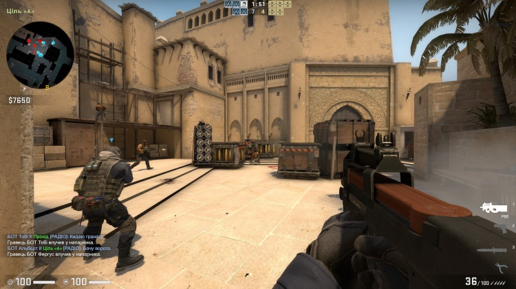

A Counter-Strike: Global Offensive (röviden: CS:GO) online csapatalapú first-person shooter, amelyet a Valve Corporation és a Hidden Path Entertainment fejleszt. Ez a negyedik része a Counter-Strike sorozatnak, leszámítva a Counter-Strike: Neo és a Counter-Strike: Online játékokat. A Global Offensive kiadási időpontja 2012. augusztus 21. Az előző játékokhoz képest újabbak pályák is megjelennek, új szereplők, fegyverek és játékmódok. Játékmenetét tekintve kompetitív jellegű. A sorozat többi tagjaihoz hasonlóan a játékban két csapat méri össze az erejét, a terroristák (T-k) és a terrorelhárítók (CT-k)...
Counter-Strike: Global Offensive
Ugrás a játékhoz.
A Valorant egy ingyenesen játszható, first-person shooter, amelyet a Riot Games fejlesztett és adott ki. A játék 2020. április 7-én kezdett egy zárt béta időszakot korlátozott hozzáféréssel, majd 2020. június 2-án jelent meg hivatalosan. A Valorant inspirációt merít a Counter-Strike taktikai lövöldözős sorozatból. A játékosok az ügynökök sorozatának egyikeként játszanak, akiket a világ számos országa és kultúrája alapján terveztek meg. Az ügynökök egyedi képességekkel rendelkeznek, amelyek mindegyikéhez töltésre van szükség amit a körök elején lehet megvenni, valamint egy egyedülálló végső képességgel, amely öléseken, halálokon, gömbökön keresztüli töltést igényel. A játékban két csapat méri össze az erejét.


Valorant
Ugrás a játékhoz.összehasonlítás: